$
Danial Riazati
danial@linux-desktop
:
~/portfolio
$
ls
AboutMe.txt CV.txt ContactInfo.txt Educations.txt
Skills.txt Experiences.txt Projects.txt Certificates.txt
Skills.txt Experiences.txt Projects.txt Certificates.txt
danial@linux-desktop
:
~/portfolio
$
cat AboutMe.txt
-----------------------------------------
Hello There,
I'm Danial Riazati,
a Computer Engineering graduate from Shahid Beheshti University, deeply immersed in the world of technology both as a profession and a passion. My journey into the realm of computers began at the tender age of four, when I got my first PC. That early fascination has blossomed into a lifelong commitment to innovation, engaging deeply with system design, IoT, and the intricacies of software and hardware integration. My experiences have honed my skills across a variety of technologies, including developing efficient solutions with ASP.NET and SQL, exploring user-centric applications through Flutter and React.js, and leveraging Docker and Linux for seamless development environments. Beyond the bits and bytes, programming is my life, work, and hobby. I breathe code, thrive on the challenges it presents, and find joy in continuous learning and problem-solving. Basketball holds a special place in my heart, offering a physical outlet for my energy and a team spirit that mirrors my work philosophy. My ultimate dream is to both teach and learn, sharing knowledge and gathering people together to nourish my soul and relax my mind. As I continue to navigate the tech landscape, my goal remains clear: to innovate, educate, and inspire, never stopping in my quest to learn and share new skills.
-----------------------------------------
Hello There,
I'm Danial Riazati,
a Computer Engineering graduate from Shahid Beheshti University, deeply immersed in the world of technology both as a profession and a passion. My journey into the realm of computers began at the tender age of four, when I got my first PC. That early fascination has blossomed into a lifelong commitment to innovation, engaging deeply with system design, IoT, and the intricacies of software and hardware integration. My experiences have honed my skills across a variety of technologies, including developing efficient solutions with ASP.NET and SQL, exploring user-centric applications through Flutter and React.js, and leveraging Docker and Linux for seamless development environments. Beyond the bits and bytes, programming is my life, work, and hobby. I breathe code, thrive on the challenges it presents, and find joy in continuous learning and problem-solving. Basketball holds a special place in my heart, offering a physical outlet for my energy and a team spirit that mirrors my work philosophy. My ultimate dream is to both teach and learn, sharing knowledge and gathering people together to nourish my soul and relax my mind. As I continue to navigate the tech landscape, my goal remains clear: to innovate, educate, and inspire, never stopping in my quest to learn and share new skills.
-----------------------------------------
danial@linux-desktop
:
~/portfolio
$
cat CV.txt
"
Danial_Riazati_CV.pdf
"
danial@linux-desktop
:
~/portfolio
$
cat ContactInfo.txt
["
riazatidanial@gmail.com
", "
LinkedIn
", "
github
"]
danial@linux-desktop
:
~/portfolio
$
s
$
Educations
danial@linux-desktop
:
~/portfolio
$
cat Educations.txt
-----------------------------------------
Shahid Beheshti University
Bachelor of Engineering - BE, Computer Engineering (GPA: 3.47/4)
Sep 2019 - Feb 2024
National Organization for Development of Exceptional Talents (Sampad)
High School Diploma - mathematics (GPA: 3.97/4)
Sep 2013 - Jun 2019
-----------------------------------------
Shahid Beheshti University
Bachelor of Engineering - BE, Computer Engineering (GPA: 3.47/4)
Sep 2019 - Feb 2024
National Organization for Development of Exceptional Talents (Sampad)
High School Diploma - mathematics (GPA: 3.97/4)
Sep 2013 - Jun 2019
-----------------------------------------
danial@linux-desktop
:
~/portfolio
$
s
$
Skills
Programming, Query, Markup Languages:
C#, Python, Dart, GO, C/C++, Java, JavaScript, SQL, HTML5,
CSS/SCSS
Web Frameworks (Backend):
.NET Core (Web API - MVC), .NET Framework, Node.js, GO REST API Frameworks
(Gin, Gorilla Mux, Fiber), Flask
Web Frameworks (Frontend):
Next.js, React.js, Flutter, Bootstrap, jQuery, Android SDK, Flutter Pi
Databases and Caches:
Microsoft SQL Server, Oracle, MySQL, SQLITE, MongoDB, Redis
Hardware and Boards:
Raspberry Pi Family (Raspberry Pi 4 Model B - Raspberry Pi Zero W), Arduino Uno
Environment and Tools:
Raspberry OS, Linux Debian-Based distros (Ubuntu, Kali Linux), Shell, Nginx,
Visual Studio, VSCode, Message Brokers (Kafka - RabbitMQ), API Gateway (Ocelot), Graylog,
Elasticsearch
Project Management and IaaS:
Scrum, Git, Docker, AWS, Microsoft Azure, GitHub - GitLab CI/CD
Computer Science:
Data Structures and Algorithms, Computer Networking, Operating Systems, SOLID
principles, Design Patterns, Micro-Services, Asynchronous programming
$
Projects
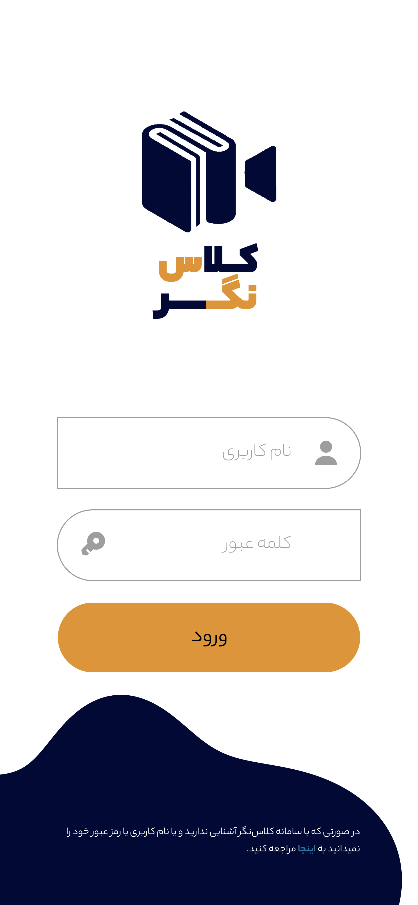
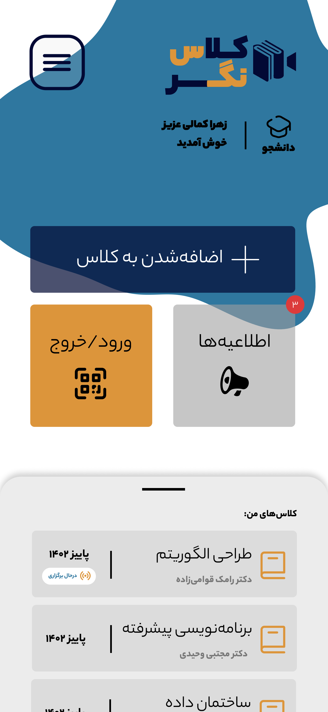
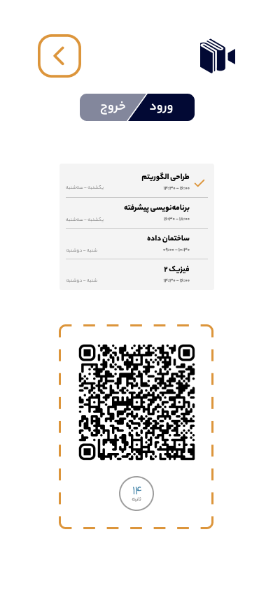
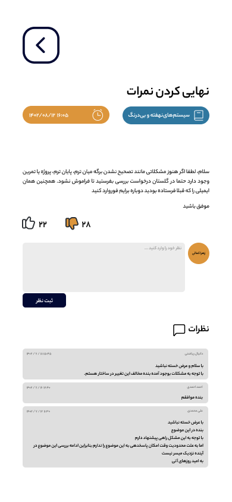
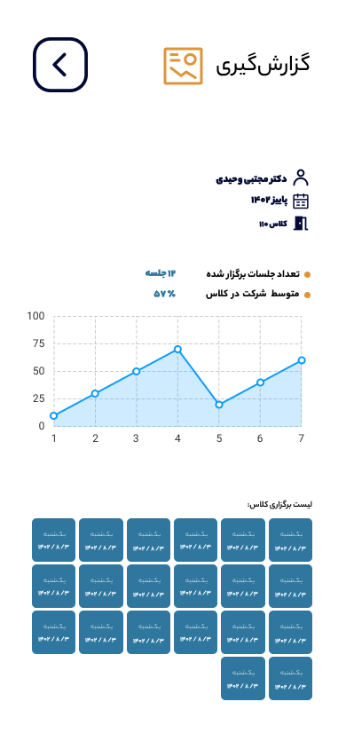
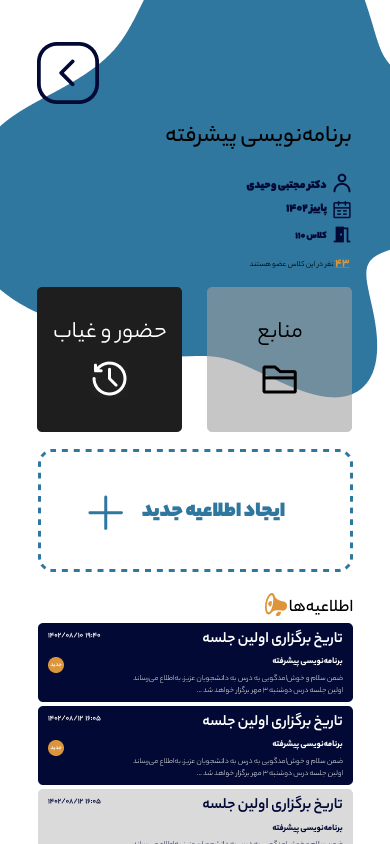
💡 Thesis Project
Title: Class Negar (Revolutionizing Classroom Management and Attendance through Smart Technology)
Date: Feb 2024
### “Best thesis project candidate” in Shahid Beheshti University Faculty of Computer Science and Engineering
Key Words: #Raspberry_Pi #Raspberry_OS #IoT #DotNet #REST_API #RFID #QRCODE #PWA #UI/UX
Description:
As a culmination of my Bachelor of Computer Engineering at Shahid Beheshti University, I spearheaded the development of "Class Negar", a pioneering smart classroom system designed to streamline class management and enhance the educational experience for both faculty and students. This project stands as a testament to my ability to blend theoretical knowledge with practical application, showcasing my expertise in both hardware and software domains.
Core Features:
⚬ Seamless Integration: Utilizing a Raspberry Pi Zero W as the central processing unit, Class Negar seamlessly integrates with existing university systems, ensuring a smooth adoption curve.
⚬ Advanced Attendance Tracking: Incorporating QR code and RFID scanning technologies, the system offers a dual-mode for recording check-ins and check-outs, accommodating students and professors with university ID cards or QR codes generated within the Class Negar system.
⚬ Interactive Platform: A Progressive Web App (PWA) serves as the system's interface, facilitating class management tasks for professors, such as adding discussions, uploading resources, and monitoring attendance data.
⚬ Comprehensive Reporting: The system enables detailed attendance reporting, providing insights on student presence both on an individual and group basis, thereby aiding in the academic assessment process.
⚬ Administrative Control: An intuitive admin panel allows for the efficient management of the system, including class oversight and data analytics.
Impact and Usability:
The design and implementation of Class Negar were driven by a commitment to usability and security. The system's interface was crafted with keen attention to UI/UX principles, ensuring an accessible and user-friendly experience for all stakeholders. By offering a reliable and efficient method for managing class attendance and resources, Class Negar has not only enhanced the educational process within the faculty but also set a benchmark for future innovations in smart classroom systems.
Conclusion:
My role in bringing Class Negar to fruition exemplifies my capability to navigate complex engineering challenges and deliver solutions that are both innovative and practical. This project underscores my proficiency in a range of technical skills, from hardware design with Raspberry Pi Zero W to software development for PWA, along with a deep understanding of the importance of user experience in educational technology.
News:
July 2024 - I am thrilled to announce that my thesis project, "ClassNegar," is now officially published and available for use at the Shahid Beheshti University Faculty of Computer Science and Engineering. This innovative smart classroom system, designed to revolutionize classroom management and attendance tracking, is a product of rigorous research and development. It seamlessly integrates advanced technologies such as Raspberry Pi, QR code, and RFID to create a dual-mode attendance tracking system. With a user-friendly Progressive Web App (PWA) interface, ClassNegar enables professors to manage class activities, upload resources, and monitor attendance with ease. This project has been recognized as the "Best Thesis Project Candidate" by the faculty, underscoring its impact and potential. The deployment of ClassNegar marks a significant milestone in enhancing the educational experience for both faculty and students. The system's comprehensive reporting capabilities provide detailed insights into student attendance, aiding academic assessments and resource management. The intuitive admin panel ensures efficient oversight and data analytics, promoting a streamlined educational process. I am immensely grateful to my supervisor, Dr. Mojtaba Vahidi-Asl , for his invaluable guidance and support throughout my thesis project. Additionally, I extend my heartfelt thanks to Dr. Mohsen Ebrahimi Moghaddam , Head of the Computer Engineering Faculty, for his unwavering support in implementing ClassNegar at the faculty. Attached are some photos showcasing ClassNegar in action, demonstrating its user-friendly interface and seamless integration within the university environment.
Title: Class Negar (Revolutionizing Classroom Management and Attendance through Smart Technology)
Date: Feb 2024
### “Best thesis project candidate” in Shahid Beheshti University Faculty of Computer Science and Engineering
Key Words: #Raspberry_Pi #Raspberry_OS #IoT #DotNet #REST_API #RFID #QRCODE #PWA #UI/UX
Description:
As a culmination of my Bachelor of Computer Engineering at Shahid Beheshti University, I spearheaded the development of "Class Negar", a pioneering smart classroom system designed to streamline class management and enhance the educational experience for both faculty and students. This project stands as a testament to my ability to blend theoretical knowledge with practical application, showcasing my expertise in both hardware and software domains.
Core Features:
⚬ Seamless Integration: Utilizing a Raspberry Pi Zero W as the central processing unit, Class Negar seamlessly integrates with existing university systems, ensuring a smooth adoption curve.
⚬ Advanced Attendance Tracking: Incorporating QR code and RFID scanning technologies, the system offers a dual-mode for recording check-ins and check-outs, accommodating students and professors with university ID cards or QR codes generated within the Class Negar system.
⚬ Interactive Platform: A Progressive Web App (PWA) serves as the system's interface, facilitating class management tasks for professors, such as adding discussions, uploading resources, and monitoring attendance data.
⚬ Comprehensive Reporting: The system enables detailed attendance reporting, providing insights on student presence both on an individual and group basis, thereby aiding in the academic assessment process.
⚬ Administrative Control: An intuitive admin panel allows for the efficient management of the system, including class oversight and data analytics.
Impact and Usability:
The design and implementation of Class Negar were driven by a commitment to usability and security. The system's interface was crafted with keen attention to UI/UX principles, ensuring an accessible and user-friendly experience for all stakeholders. By offering a reliable and efficient method for managing class attendance and resources, Class Negar has not only enhanced the educational process within the faculty but also set a benchmark for future innovations in smart classroom systems.
Conclusion:
My role in bringing Class Negar to fruition exemplifies my capability to navigate complex engineering challenges and deliver solutions that are both innovative and practical. This project underscores my proficiency in a range of technical skills, from hardware design with Raspberry Pi Zero W to software development for PWA, along with a deep understanding of the importance of user experience in educational technology.
News:
July 2024 - I am thrilled to announce that my thesis project, "ClassNegar," is now officially published and available for use at the Shahid Beheshti University Faculty of Computer Science and Engineering. This innovative smart classroom system, designed to revolutionize classroom management and attendance tracking, is a product of rigorous research and development. It seamlessly integrates advanced technologies such as Raspberry Pi, QR code, and RFID to create a dual-mode attendance tracking system. With a user-friendly Progressive Web App (PWA) interface, ClassNegar enables professors to manage class activities, upload resources, and monitor attendance with ease. This project has been recognized as the "Best Thesis Project Candidate" by the faculty, underscoring its impact and potential. The deployment of ClassNegar marks a significant milestone in enhancing the educational experience for both faculty and students. The system's comprehensive reporting capabilities provide detailed insights into student attendance, aiding academic assessments and resource management. The intuitive admin panel ensures efficient oversight and data analytics, promoting a streamlined educational process. I am immensely grateful to my supervisor, Dr. Mojtaba Vahidi-Asl , for his invaluable guidance and support throughout my thesis project. Additionally, I extend my heartfelt thanks to Dr. Mohsen Ebrahimi Moghaddam , Head of the Computer Engineering Faculty, for his unwavering support in implementing ClassNegar at the faculty. Attached are some photos showcasing ClassNegar in action, demonstrating its user-friendly interface and seamless integration within the university environment.
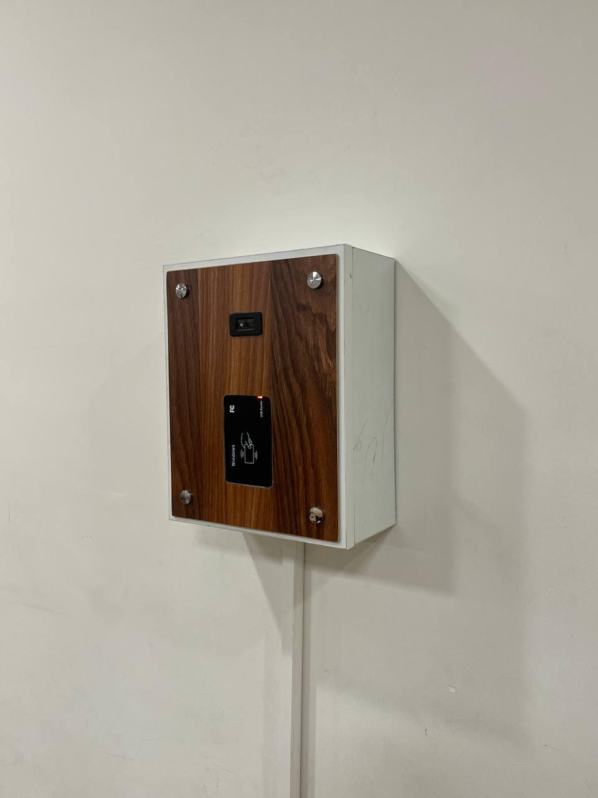
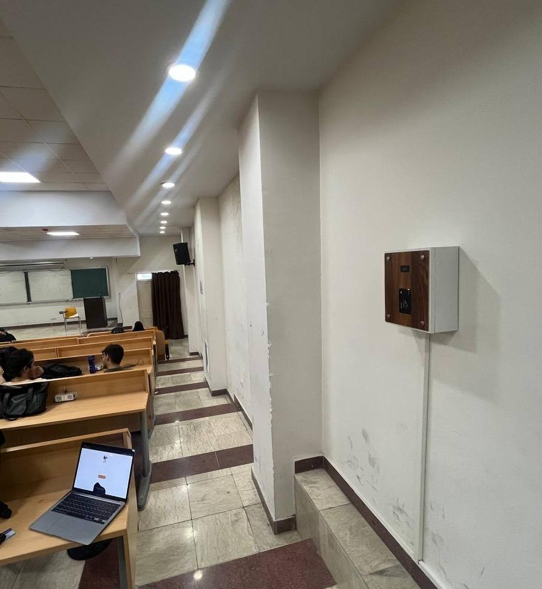
Piki Smart Cart (Transforming Retail with State-of-the-Art Smart
Technology)
The Piki Smart Cart embodies the forefront of retail innovation, a project that I had the pleasure of leading and developing from the ground up. As the Team Lead and Full Stack Developer at Startup Studio, I championed the transformation of conventional shopping carts into intelligent companions for shoppers.
Key Words: #Computer_Vision #IoT #Micro_Services #Raspberry_Pi #Sensor_Fusion #Linux #REST_API #Payment
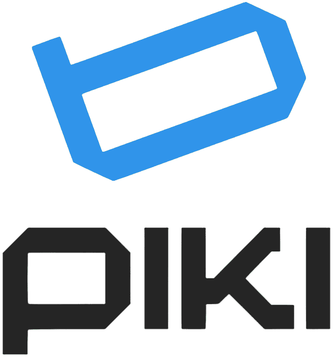
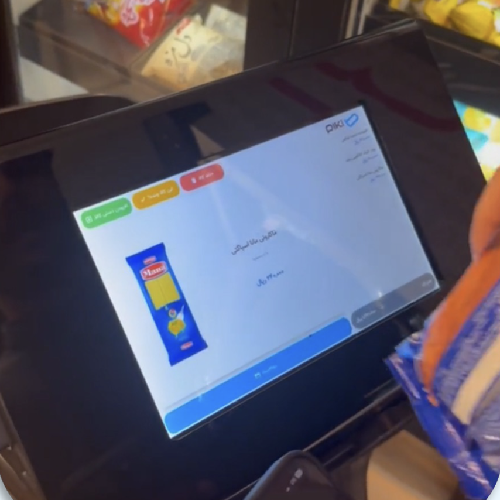
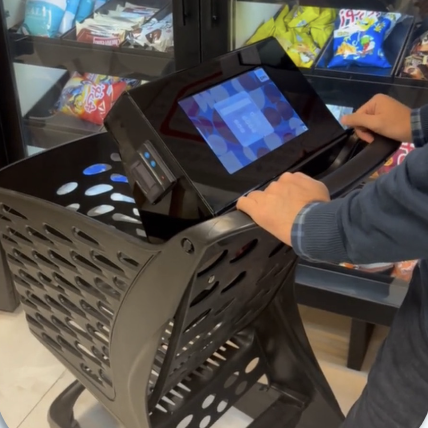
Innovative Features:
⚬ Advanced Sensor Integration: By harnessing a variety of sensors, including load cells and cutting-edge computer vision, the Piki Smart Cart provides a seamless shopping experience. These sensors accurately track items as they are added or removed from the cart, ensuring an interactive and responsive user interface.
⚬ Sophisticated Fraud Detection: At the core of the cart's technology lies a robust fraud detection system, meticulously engineered to safeguard against inaccuracies and potential misuse. This system is the result of a comprehensive design process that emphasizes security without compromising user convenience.
⚬ Versatile Payment Solutions: The Piki Smart Cart offers a range of payment options, integrating effortlessly with mobile and card payments, thereby eliminating the need for queues and reducing checkout times dramatically.
⚬ Microservice-Based Architecture: Utilizing a microservice-based REST API infrastructure, the system ensures scalability and maintainability. This architecture supports the cart's complex functionalities and facilitates seamless updates and enhancements.
⚬ Raspberry Pi and Linux Foundation: Powered by a Raspberry Pi and operating on a Linux platform, the cart is a testament to the versatility and reliability of open-source technologies in creating commercial-grade applications.
Value Proposition:
The Piki Smart Cart project is more than just a technological triumph; it's a leap towards the future of shopping. By integrating multiple sensors and technologies, we have not only enhanced the shopping experience but also set a new standard for retail operations. Our commitment to quality code, system design, and innovation has culminated in a product that not only meets the current market demands but also paves the way for future advancements. Through the successful launch of the Piki Smart Cart, we have solidified our company's reputation as a leader in technological innovation. This project serves as a showcase of our dedication to creating solutions that are not just functional but also scalable, maintainable, and ahead of their time.
InfraFund.net (Empowering Net-Zero Solutions: Building Sustainable Futures through Blockchain Powered Crowdfunding with InfraFund)
As a Frontend Developer at InfraFund, I work on a cutting-edge platform designed for Web 3.0 crowdfunding focused on NetZero projects. InfraFund integrates blockchain technology, AI-driven asset management, and robust KYC systems to provide a secure, transparent, and efficient platform for investors and project owners.
Project Description:
InfraFund facilitates crowdfunding through Security Token Offerings (STOs) and a Decentralized Exchange (DEX). The platform offers AI tools for asset management, real-time analytics, interactive charts, a fiat-to-crypto exchange, and a comprehensive KYC system.
Key Words: #Next.js #Web3 #Smart Contracts #Ethereum
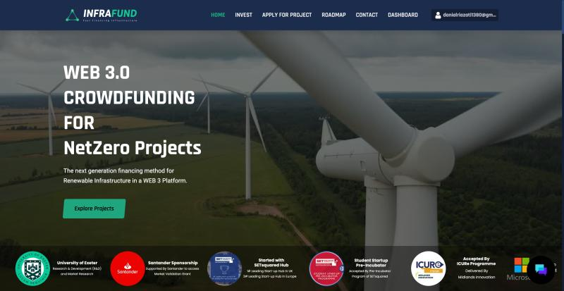
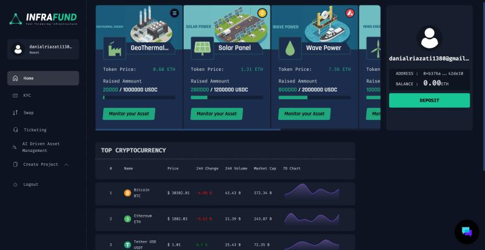
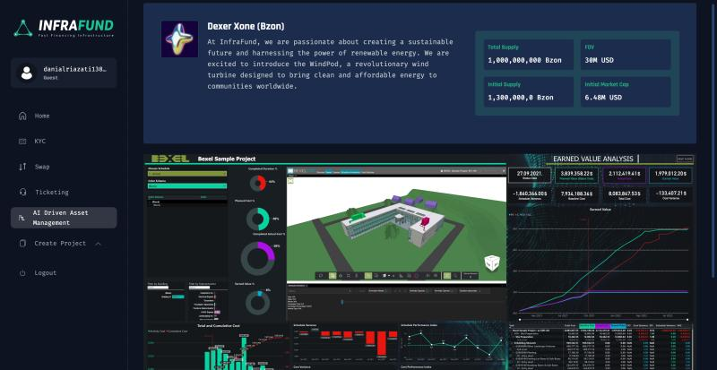
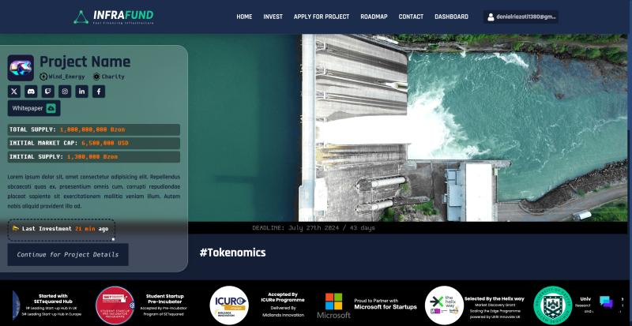
My Roles and Responsibilities :
• UI/UX Development: Designing and implementing user-friendly, responsive interfaces.
• Web3 Integration: Implementing transactions and wallet connections for various blockchain networks.
• Data Visualization: Creating real-time analytics and interactive charts.
• Chat and Ticketing System: Integrating a comprehensive chat system with user management and push notifications.
• Authentication and Security: Implementing secure authentication mechanisms.
• Performance Optimization: Ensuring optimal performance and load speed.
• State Management: Managing application state and ensuring data synchronization.
• Collaboration and Code Quality: Collaborating with backend developers and maintaining high code quality.
$
Experineces
danial@linux-desktop
:
~/portfolio
$
cat Experineces.txt
Frontend Developer - InfraFund.net, London, United Kingdom
Apr 2024 - Jul 2024
As a Frontend Developer at InfraFund, I work on a cutting-edge platform designed for Web 3.0 crowdfunding focused on NetZero projects. InfraFund integrates blockchain technology, AI-driven asset management, and robust KYC systems to provide a secure, transparent, and efficient platform for investors and project owners.
Project Description :
InfraFund facilitates crowdfunding through Security Token Offerings (STOs) and a Decentralized Exchange (DEX). The platform offers AI tools for asset management, real-time analytics, interactive charts, a fiat-to-crypto exchange, and a comprehensive KYC system.
Software Engineer - Hasin Technology Co., Tehran, Iran
Mar 2021 - Feb 2024
• Backend Developer, Payment Solutions Department
Initially joined as a Backend Developer focusing on payment switch and channel management systems. Spearheaded algorithmic and security enhancements to handle over 2 million transactions daily, ensuring system integrity, speed, and maintainability. Excelled in implementing robust monitoring and logging systems for efficient issue resolution.
• Team Lead & Full Stack Developer, Startup Studio Department
Transitioned to lead and contribute as a Full Stack Developer within the innovative Startup Studio. Directed brainstorming sessions and spearheaded the development of three startup projects, including the high-tech Piki Smart Cart. Pioneered the integration of advanced sensors and computer vision to enhance the shopping experience, eliminating queues. Led the design of a sophisticated fraud detection system and versatile payment solutions, employing best practices in code quality and system design.
Key Contributions:
• Engineered a core system for sensor data recognition and processing, significantly enhancing UI responsiveness and fraud detection capabilities.
• Implemented various design patterns and system design methodologies, improving code maintainability and project scalability.
• Fostered a culture of innovation, leading to the successful launch of Piki Smart Cart and enhancing the company's technological footprint.
Internship Mentor - Radin Technology Co., Tehran, Iran
Jun 2021 - Dec 2023
Mentored 37 undergraduates in CS/CE at Radin Technology Co., teaching software engineering fundamentals, including algorithms, OOP, design patterns, and tool proficiency (Git, Microsoft Azure). Developed web development courses on .NET Core, RESTful APIs, React JS, and basics of UI/UX design with Figma. Guided interns to specialize in backend or frontend development, culminating in real-world projects for their portfolios.
Research Assistant - Shahid Beheshti University, Tehran, Iran
Mar 2021 - Sep 2023
• Engaged in innovative research under Dr. Mohsen Ebrahimi Moghaddam, Head of the Computer Engineering Faculty, to enable iOS functionality on alternative hardware platforms, decrypting proprietary protocols and algorithms.
• Designed an efficient data schema and developed web API services for a BPMS project, demonstrating practical application of research in software development.
Teaching Assistant - Shahid Beheshti University, Tehran, Iran
Sep 2020 - Feb 2024
• Appointed as Head Teaching Assistant for Advanced Programming under Dr. Mojtaba Vahidi-Asl crafting exercises focused on OOP and Design Patterns, and facilitating the adoption of efficient programming practices.
• Served as a Teaching Assistant for Internet Engineering with Dr. Ehsan Javanmardi, where I taught web fundamentals, ReactJS, NodeJS, and NoSQL database usage. Coordinated the development of a timely project monitoring COVID-19 statistics.
• Assisted in the Algorithms course led by Dr. Ramak Ghavamizadeh, mentoring students in solving complex problems with an emphasis on optimal time and memory complexity, employing greedy algorithms and dynamic programming in C/C++.
danial@linux-desktop
:
~/portfolio
$
s
$
Certificates
### Scrum Alliance Certified Scrum Professional
Scrum Alliance
Credential ID 001605847
### JAVACUP CERTIFIED JAVA PROGRAMMER
Javacup Association
Issued Oct 2020
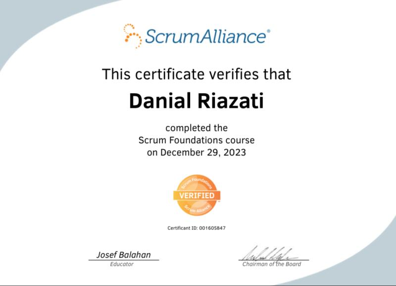
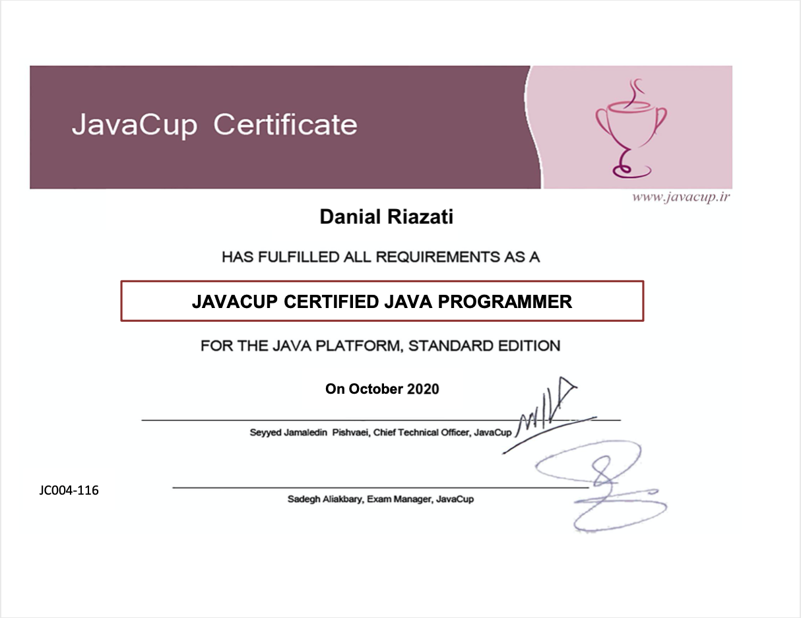